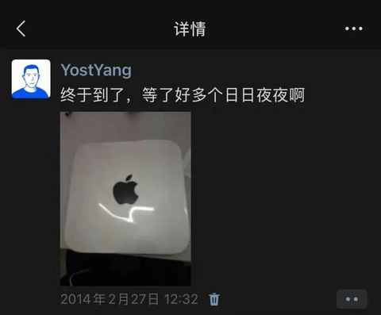
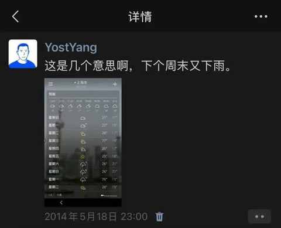
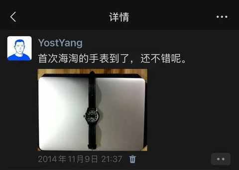

十年之前：在 2024年余额不足时回顾 2014
约斯特普通
2024-12-24
有感于最近几天听的一期播客，在12月许多节目都在回顾2024年，无时差研究所把时间线跳到了十年前。
不得不感慨，微信是一款伟大的产品，最快的回溯2014年的方式非查看朋友圈莫属，里面图片的画质也在提醒我这些都是有年头的照片。
二十年前长下面这样：
十年前长下面这样：
当时的体重也得有85kg以上，去年开始瘦了一些之后就很少看以前的照片，感到既真实又突兀。
关于2014年的一些事：
- 在上海工作的第三年
- 本命年
- 第 N 次搬家
- 首次成为捷安特山地车车主
- 首次报警，原因是自行车被偷
- 用的是魅族手机
- 第 N 次换工作
- ……
接下来以时间线的形式来简单回顾下2014年：
一月
魅族的MX3，从现在的角度看来依然不失精致。
二月
个人的首款苹果电脑，是从淘宝买的日行的Mac Mini，从发货到收到货有两周多。

三月
正是中二的年纪，难免做一些中二的事情，用手举身份证拍照的方式，回应关于年龄的梗。
四月
捷安特ATX660，入门款山地车，主要买来骑车上下班用，后面没几个月就被偷了。
五月
梅雨季节的时候最盼望的是雨后天晴。

六月
绝对是黑暗料理，和可乐鸡翅大不一样，别尝试！
七月
去了趟包头，玩了不少地方，用下面这张照片做了多年的头像。
八月
那时候下班比较早，路过菜市场会买菜回去做晚饭，正是收摊的节点，20块钱就能买够几天的菜。 当时是给老婆做晚饭，现在是每天给老婆和娃做晚饭，倒是菜市场去的越来越少，大多数时间都是在手机上买菜。
九月
参加一个前端开发的大会，居然中奖。
十月
相比高中的时候，老家的河道变化巨大。
十一月
积极参与时下流行的海淘。

十二月
没有买锤子手机，但他们出的几款 app 都用过，现在依然在用的是：锤子便签。